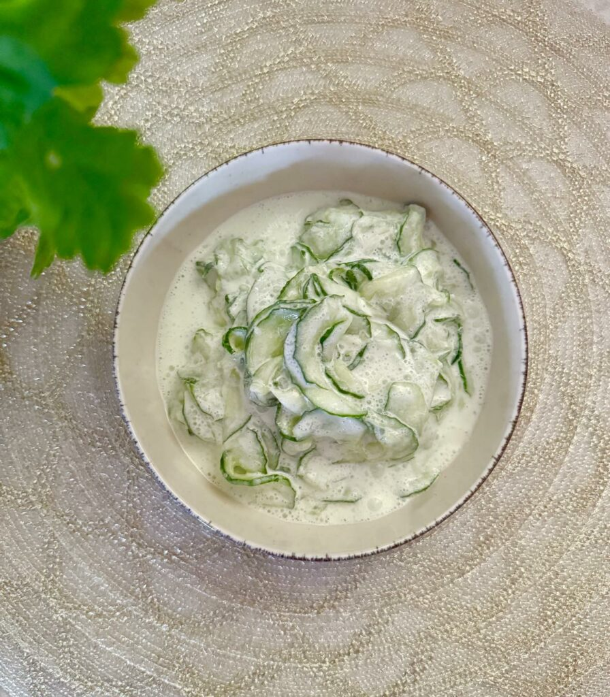

Cucumber salad

A quick, savory and refreshing side
Since my childhood, one of my favourite side dish was my mom's cucumber salad with sour cream.
It is salty, garlicky, creamy and it goes amazingly well with her chicken paprikas.
Ingredients
- 1 cucumber
- 2 cloves of garlic
- 300 ml of sour cream
- salt
- sugar (optional)
Preparation - 30 minutes
- Slice the cucumber into thin slices. (for best result, use a mandoline slicer)
- Salt the slices and set aside in a bowl for 30 minutes.
- Mix the sour cream with the crushed garlic and also set aside.
At this point you can also add 1 teaspoon of sugar to the mix. Some people like this salad slightly sweet, I don't really.
- Once the cucumber has let out its juices due to the salt, put them in a colander and gently squeeze out as much juice as possible.
- Mix the garlicky sour cream with the cucumbers.
- You can already eat it, but for the best flavour put it in the fridge for an hour.
- In Hungary, traditionally we sprinkle it with a little bit of paprika powder, but this is up to you.
Enjoy!
Home